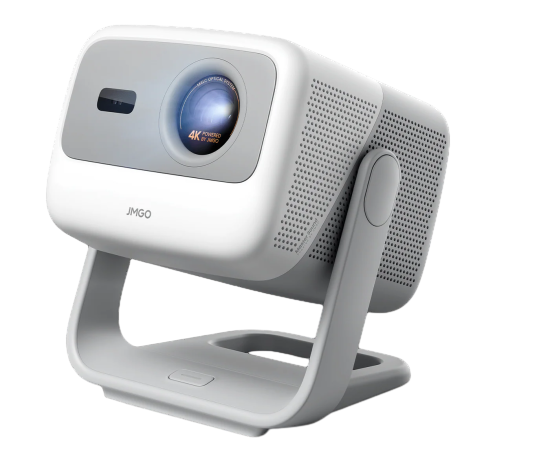

Cheesecakes for cinema
Our friend Zhenya, a pastry chef, bakes Basque cheesecakes for MESTO. All the profit from every slice — ฿100 — goes to the projector fund. When the bar is full, MESTO gets a projector for movie nights.
JMGO N1S 4K
Basque cheesecake
Born in 1990 at La Viña, a bar in San Sebastián, Spain. No crust and a very hot oven: the top caramelises almost black, while the inside stays soft and creamy.

JMGO N1S 4K
A compact 4K triple-laser projector on a built-in gimbal: it tilts to aim at a wall or the ceiling, focuses and squares the picture by itself, and has Google TV and speakers inside. It will run MESTO's movie nights.